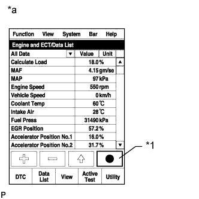

СИСТЕМА ECD (для моделей с DPF) > Система управления последующей обработкой |
| 1.ЗАФИКСИРУЙТЕ МГНОВЕННЫЕ ЗНАЧЕНИЯ ПАРАМЕТРОВ В РЕЖИМЕ ХОЛОСТОГО ХОДА И ПРИ ЧАСТОТЕ ВРАЩЕНИЯ 4000 ОБ/МИН (ПРОЦЕДУРА 1) |
Подсоедините портативный диагностический прибор к DLC3.
Запустите двигатель и включите портативный диагностический прибор.
Войдите в следующие меню: Powertrain / Engine and ECT / Data List / All Data.
|  |
Зафиксируйте мгновенные значения следующих параметров Data List.
| *1 | Кнопка фиксации мгновенных значений параметров |
| *a | Для справки |
| ДАЛЕЕ | |
| 2.СНИМИТЕ ПОКАЗАНИЯ ПОРТАТИВНОГО ДИАГНОСТИЧЕСКОГО ПРИБОРА (CATALYST DIFFERENTIAL PRESS) |
Проверьте значение Catalyst Differential Press в наборе мгновенных значений параметров, зафиксированных в процедуре 1 при работе двигателя с частотой вращения коленчатого вала 4000 об/мин без нагрузки.
| Результат | Следующий шаг |
| Catalyst Differential Press превышает 0,18 | А |
| За исключением указанного выше | B |
|
| ||||
| А | |
| 3.ЗАМЕНИТЕ ПРИЕМНУЮ ТРУБУ В СБОРЕ |
Замените приемную трубу в сборе.
| ДАЛЕЕ | ||
| ||